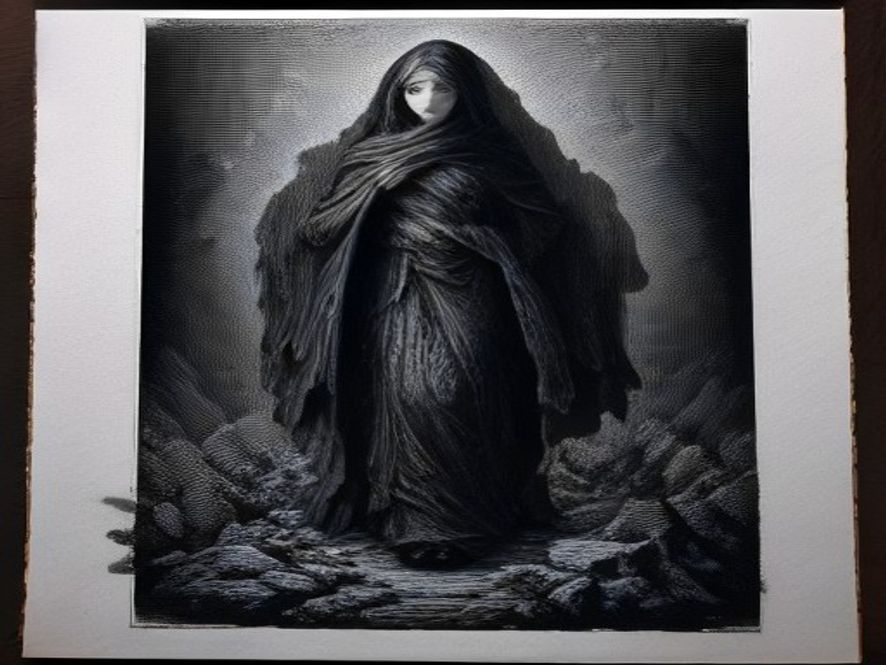

Сборник «Избранное»
Властьимущим

Дела, говорят сами за себя, но даже их перевирают. А СЛОВО, нет более могущественного оружия, побуждающего к действию. Оно бестелесно, незримо и конечный результат, полностью зависит от того, как ОНО будет воспринято, какое значение будет вложено в него, КТО и КАК его скажет.
Порой, одной интонации достаточно, чтоб переменить смысл сказанного, написанного. А стихотворения… Не возьму на себя смелость сравнения, скажу одно, что КОРАН написан именно так, аятами (стихами) и пятая часть мира, приклоняется пред этой книгой мудрости. Человек может стать фанатиком, прочитав всего несколько строк. Вот она – сила СЛОВА.
Переплетение выражений и наличие рифмы, позволяют вложить в сказанное множественный смысл. Именно по этому, я переписываю, приведенное ниже стихотворение, в прозе. Стараясь максимально точно определить те чувства и мысли, которые зарифмовал. Сказать прямо то, что волнует.
Я, уважаю власть. Согласен с тем, что государство дано нам, чтоб мы сами, не превратили жизнь в ад. Не сомневаюсь, что властью наделенные, испытывают муки ада от своей работы, что далеко не каждый, способен выдержать те нагрузки, которые им достаются…
Но знаю и другое, сколько скотов и лизоблюдов ошиваются там же, для которых свои интересы на первом месте и плевать им на все и на всех, но они тоже люди. У них тоже есть семьи и дети. Наверное, ради них они и стараются, забывая, а может, не задумываясь о том, что проблемы у всех – ОДИНАКОВЫ.
Игле с наркотой, глубоко параллельно, чью вену она проткнет, сына министра или дочери простого работяги. Вирус очередной инфекции, не будет спрашивать, каков Ваш годовой бюджет. Уход из жизни близкого человека, резанет сердце посильней, любой проверки или снятия с должности. Стихийное бедствие или несчастный случай, не согнется в поклоне пред Вашим статусом. Разлад в семье, не будет утруждать себя думами о последствиях, для Вас. Эти вопросы не знают границ, для них не существует рас и народностей, они не признают ни пол, ни возраст.
Все это бытовое и сугубо личное, для каждого из нас и не имеет значения, где мы живем и подданными какого государства являемся.
А есть еще общее, глобальное. Все вышесказанное, детский лепет, в сравнении с тем на пороге чего мы стоим. Я не собираюсь устрашать глобальными катаклизмами, которые нас ожидают. Существует телевизионный канал NatGeo (национальная география), который подробно все это рассказывает. Самое главное, что решение этим вопросам есть. Суть в том, сможем ли МЫ этого достичь? Сумеем ли понять, как хрупок, тот мир в котором МЫ живем, насколько тонка нить, которую МЫ зовем ЖИЗНЬ. Научимся ли ценить, уважать и беречь нашу ЦИВИЛИЗАЦИЮ??? Самое главное – сохраним ли ЕЁ?..
Кто я такой, чтоб рассуждать и говорить об этом? Человек, пока Человек. И хотел бы оставаться им столько, сколько отпущено свыше, а не зависеть от чьей – то прихоти, превращаясь в безмозглого скота, низкоутробную тварь - бессловесное быдло. Или вообще быть лишенным жизни. Человек, который хочет верить, что Будущее, в надежных руках, РАЗУМНЫХ ЛЮДЕЙ, которые осознают всю меру и полноту ответственности, возложенной на них власти.
Вам, кто стоит на вершине, найдите общий язык, сохраните наш МИР.
Да стальные две струны,
Вы истоки объясните
Непонятной той войны.
В коридорах, по ночам.
Нескончаемых укоров,
Что стучаться в двери, к Вам.
Где зарыт на карте клад?
Почему стучат там-тамы,
Он обиделся иль рад?
Расшифровок больше нет.
- Из забытых песен бардов,
Начинается рассвет!
Кто поверит в светлый миг?
Кто крутил всю жизнь, как лопасть?
Кто взошел на этот пик?
Палец вверх иль палец вниз?
Где найдешь, где потеряешь,
Все испортишь иль на бис?
И святые дураки,
Все мы в шахматах фигуры,
Единицы – игроки.
Что же, близок уж конец.
Так, владейте этим светом…
Коли нам придет пи…ц.